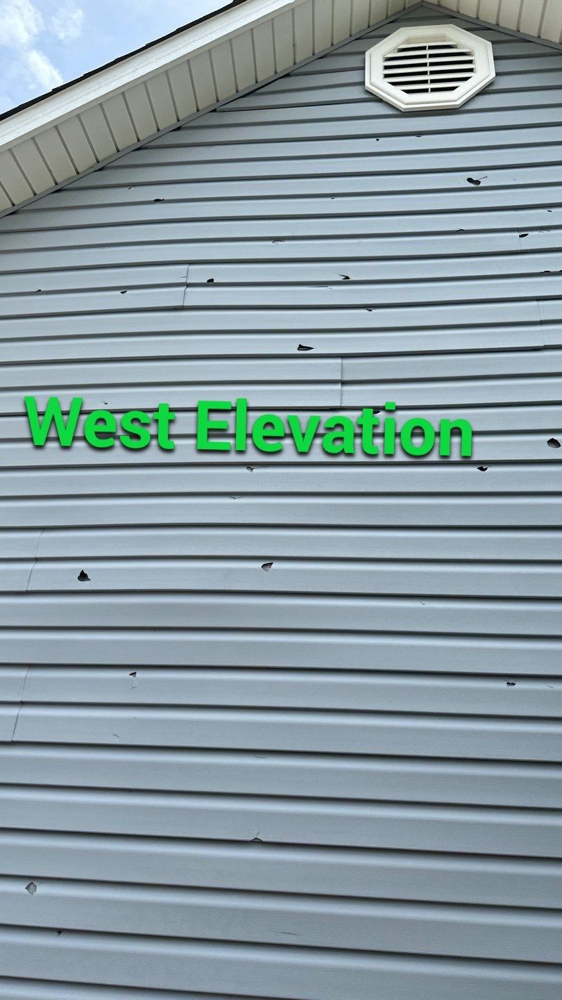
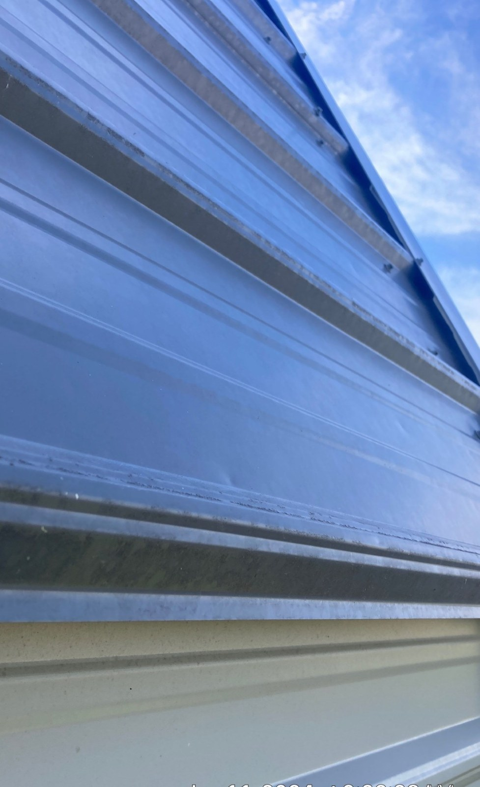
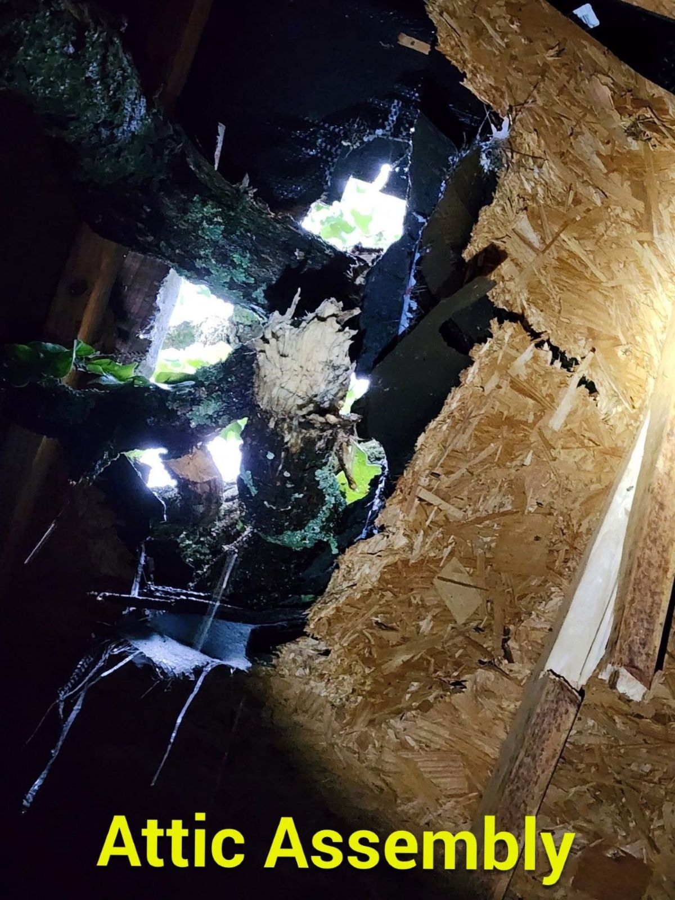
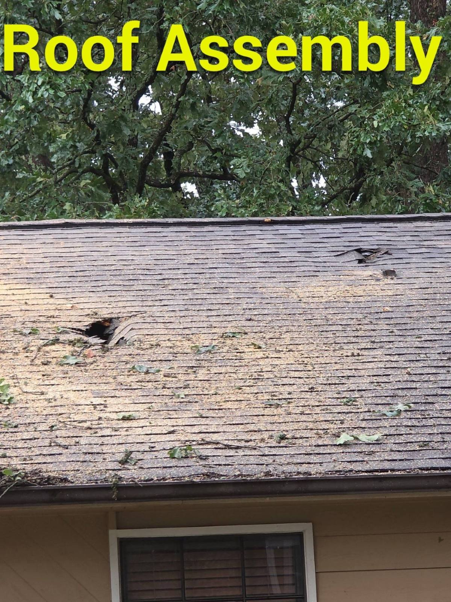
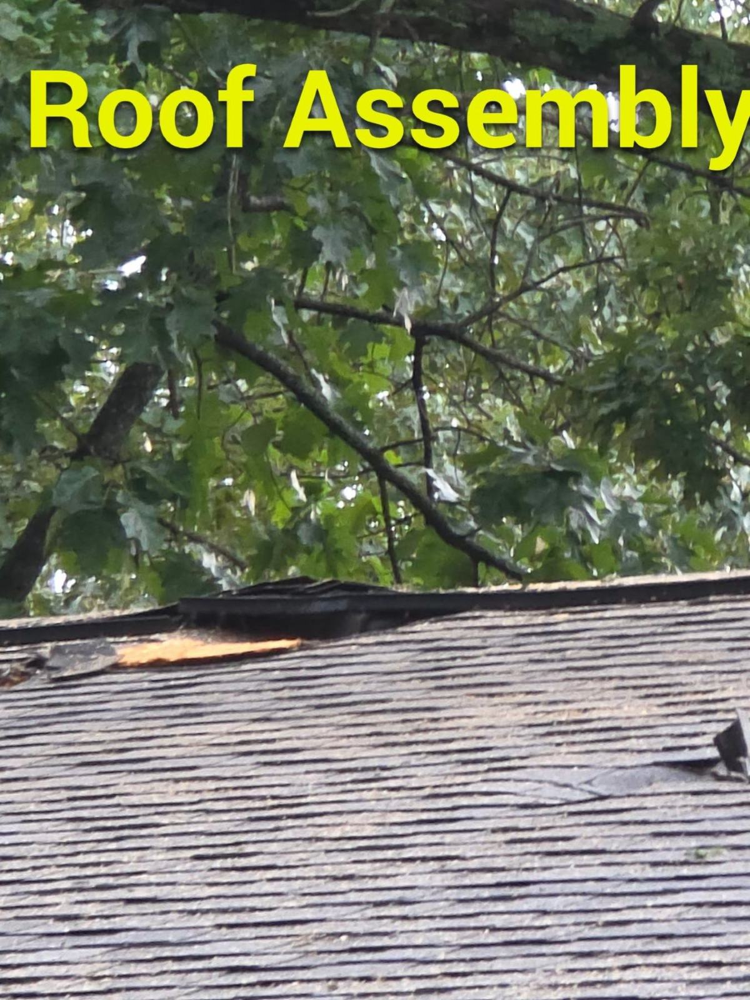
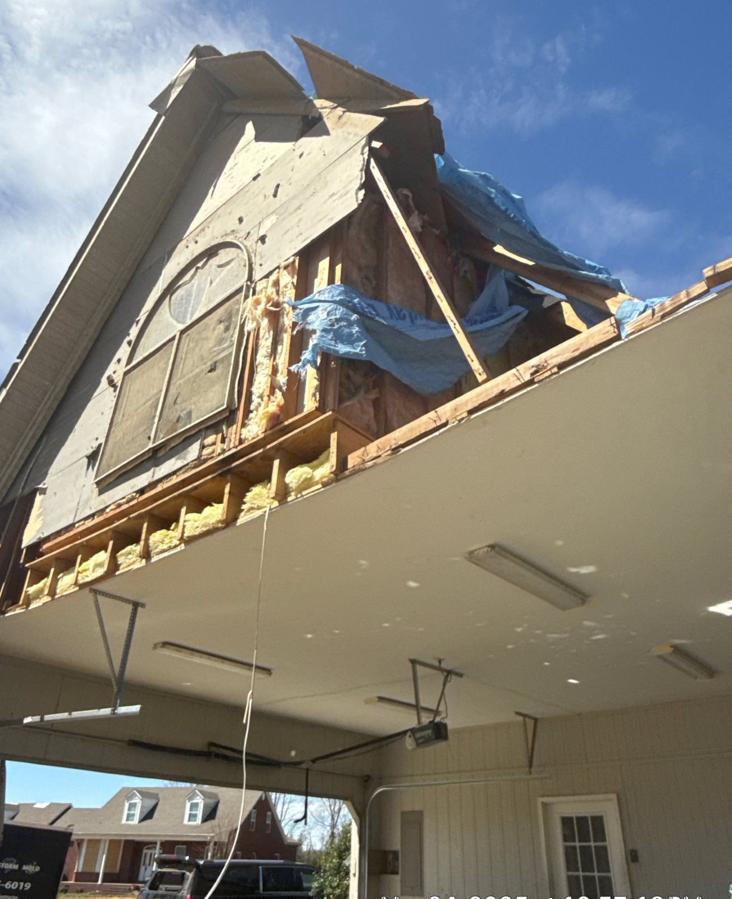
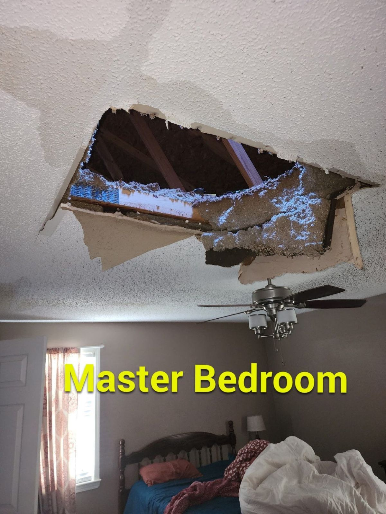

Protect People Before Property
Stay away from fallen electrical lines, unstable trees, damaged roof areas, hanging materials, broken glass, and portions of the building that may have shifted or become unsafe.
Crain Bros Inc is a full-service restoration contractor for residential and commercial properties damaged by severe weather across Northeast Arkansas. The work begins with emergency property damage mitigation and continues through inspection, assessment, restoration design, selective removal, structural drying when required, repairs, reconstruction, final inspection, and project documentation. Family owned and operated since 1984, Crain Bros Inc manages the complete restoration instead of leaving the property owner to coordinate separate stages and trades.
The first decisions after a storm can affect how much additional damage occurs. This guide gives property owners a practical path from the first safety concerns through inspection, documentation, repair planning, restoration, and completed work.
Discuss Your Property DamageStay away from fallen electrical lines, unstable trees, damaged roof areas, hanging materials, broken glass, and portions of the building that may have shifted or become unsafe.
Record visible roof, siding, gutter, window, door, tree-impact, debris, and interior conditions from safe locations. Do not climb onto a damaged roof or enter an area that may be unstable.
Storm-created openings allow the weather to continue damaging the property after the storm has passed. Emergency coverings and temporary closures stop additional wind and rain before interior mitigation and restoration work begins.
Emergency property damage mitigation stops continued weather exposure and stabilizes unsafe conditions. The work may include roof tarping, board-up, temporary enclosures, or structural stabilization while the property is inspected and the restoration is designed.
Storm inspection should include the roof, siding, gutters, fascia, soffits, windows, doors, exterior walls, framing, attic, ceilings, interior surfaces, and locations where water or impact may have traveled.
Damage visible on the exterior may continue into concealed parts of the property. Inspection determines whether roof decking, wall sheathing, framing, flashing, insulation, interior finishes, or connected building components were also affected.
If the building envelope was open, water may have entered the attic, wall cavities, insulation, ceilings, flooring, or other materials. Those conditions need to be inspected and addressed separately from the exterior repair.
The restoration plan should connect emergency property damage mitigation, inspection findings, restoration design, selective removal, structural drying when required, exterior restoration, interior reconstruction, permits, inspections, and final verification.
Project documentation records the property conditions at each stage of the restoration. The property owner receives a clear account of the inspection findings, approved scope, work progress, completed repairs, reconstruction, and final conditions.
Property restoration after severe weather begins with emergency property damage mitigation and continues through inspection, assessment, restoration design, selective removal, structural drying when required, repairs, reconstruction, final inspection, and project documentation.
Plan the Property RestorationDocument what happened, identify immediate safety concerns, determine where the property remains exposed to the weather, and establish which emergency measures are needed first.
Identify fallen trees, unstable structural components, damaged electrical service, sharp debris, broken glass, open roof areas, unsafe access, and other conditions that may affect people or the property.
Cover damaged roof areas, close broken openings, stabilize unsafe building components, and stop additional wind and rain from entering the property. This emergency mitigation must be completed before interior removal, drying, and restoration can proceed.
Inspect the roof and exterior building envelope to identify property damage caused by wind, hail, falling trees, debris, tornadoes, and water entry. The inspection covers roofing, decking, underlayment, flashing, siding, sheathing, gutters, fascia, soffits, windows, doors, trim, penetrations, transitions, and adjoining exterior components.
Inspect the structural components affected by the storm and determine how the damage changed the condition of the property. The assessment addresses framing, roof structure, wall systems, supports, connections, movement, impact locations, and adjoining components before the restoration is designed.
Inspect attics, ceilings, walls, insulation, flooring, rooms, and concealed areas that may have received rain or moisture through the damaged building envelope.
Analyze the inspection findings by property location, building system, assembly, material, and type of damage. The documentation establishes the conditions that must be addressed through mitigation, restoration design, repairs, or reconstruction.
Report the documented conditions to the property owner and identify the work supported by the inspection findings. The report distinguishes emergency mitigation needs, concealed conditions, structural concerns, drying requirements, restoration design needs, repairs, and reconstruction.
Use the inspection findings and documented property conditions to design the restoration. The scope coordinates emergency property damage mitigation, selective removal, structural work, structural drying when required, exterior restoration, interior reconstruction, permits, inspections, and the trades required for the property.
Remove storm-damaged and water-affected materials that cannot be restored. Selective removal exposes concealed areas, makes trapped moisture accessible, and prepares the property for effective drying and restoration.
When a storm-created opening allows water into the property, remove the remaining water and dry the affected structure after unsalvageable materials have been removed. Moisture readings guide the drying work until the materials that will remain are ready for restoration.
Perform the approved roofing, siding, gutter, fascia, soffit, window, door, framing, sheathing, flashing, weather-barrier, and related exterior or structural work.
Repair ceilings, walls, insulation, flooring, trim, paint, cabinetry, mechanical components, electrical components, and other interior conditions affected by the storm or resulting water entry.
Review the completed work, document repaired and reconstructed conditions, address remaining project items, and provide the property owner with the project documentation developed through the restoration.
Hail and wind can affect several exterior systems during the same storm. Roofing, siding, gutters, flashing, trim, and the weather-resistant materials behind them should be evaluated as connected parts of the building envelope.

Hail can strike roofing, siding, trim, gutters, and other exterior surfaces during the same event. The inspection follows the impact across the building rather than treating each visible mark as an isolated cosmetic issue.

Hail damaged the siding at multiple locations. The inspection determines which siding must be replaced and whether the storm also affected trim, flashing, sheathing, or concealed wall components.

A tree fell through the roof and opened the building directly to the weather. The property requires tree-removal coordination, emergency weather protection, and inspection of the roofing, decking, framing, ceilings, and interior areas below the impact.

Roof damage is evaluated together with the decking, underlayment, flashing, penetrations, attic, insulation, and interior areas beneath it so hidden water entry or impact damage is not covered by a surface repair.
Falling trees and tornadoes can damage the roof, framing, exterior walls, openings, utilities, ceilings, and occupied areas inside a property. The inspection follows the damage from the point of impact through every connected part of the structure.

A tree impact can damage roofing, decking, rafters, trusses, framing connections, ceilings, and interior finishes. The restoration scope follows the force of the impact through the connected structure.

When a tree falls onto a building, removing the tree is only the first need. The roof and structural components beneath the impact must be protected, inspected, documented, and incorporated into the permanent repair plan.

Tornado damage may involve several sides and levels of a building at once. Inspection considers the roof, walls, framing, openings, utilities, attached components, and interior spaces before restoration decisions are made.

Severe exterior damage can leave the building vulnerable to weather and may indicate movement or damage beyond the visible surfaces. Emergency protection and a complete assessment provide the starting point for safe restoration.
Temporary protection is not the permanent repair. Emergency work helps keep the property from being damaged again while inspection, documentation, design, scheduling, and restoration planning move forward.

Temporary roof covering protects an open or damaged roof from additional rainfall while the roof condition, connected damage, repair scope, materials, and permanent work are being organized.

The storm-created opening left the interior ceiling exposed to the outdoors. Emergency weather protection must stop additional rain from entering before damaged ceiling materials are removed, concealed moisture is addressed, and the roof and interior are restored.
Temporary roof protection for open or damaged roof areas while inspection and permanent restoration planning proceed.
Temporary protection for damaged windows, doors, wall openings, and other exposed portions of the building envelope.
Temporary support and protection when storm or impact damage affects structural components or safe access.
Inspection and repair of roofing, siding, trim, flashing, openings, framing, and other systems affected by wind.
Assessment and restoration of hail impact damage affecting roofing, siding, gutters, trim, and exterior surfaces.
Coordinated emergency protection, inspection, repair, and reconstruction for multiple building systems affected by severe wind.
Structural, roof, wall, opening, and interior restoration after trees, limbs, or debris strike the building.
Repairs involving roofing, decking, underlayment, flashing, siding, sheathing, weather barriers, fascia, soffits, windows, doors, and trim.
Property damage mitigation may include water removal, selective removal of unsalvageable materials, moisture documentation, and structural drying when rain enters through storm-created openings.
Restoration of ceilings, walls, insulation, flooring, trim, paint, cabinetry, and building systems affected by storm damage or water entry.
Crain Bros Inc works on properties involved in insurance claims as a contractor. We inspect and document the damage, property conditions, project scope, work progress, repairs, reconstruction, and completed property conditions. That documentation is provided to the property owner for use on the property owner's own behalf.
Storm damage can affect several parts of a property and may require services beyond the immediate storm restoration work.
Detailed inspection and diagnostics identify visible damage, concealed conditions, affected building systems, and the information needed to design the restoration.
Learn moreEmergency property damage mitigation protects exposed openings, stabilizes unsafe conditions, and stops the weather from continuing to damage the property.
Learn moreWater damage restoration addresses property damage caused when rain or other water enters through storm-created openings.
Learn moreFire damage restoration provides investigation, cleaning, restoration design, repairs, and reconstruction for property damage caused by fire and smoke.
Learn moreProperty and building restoration coordinates the work required to restore damaged building systems, assemblies, materials, and interior spaces.
Learn moreContents care supports inventory, cleaning, pack-out, storage, deodorization, document recovery, and media recovery for affected personal property.
Learn moreCrain Bros Inc is family owned and operated, has served Northeast Arkansas since 1984, and works on residential and commercial properties. Call to discuss emergency protection, inspection, restoration planning, repairs, and reconstruction.
Talk With Crain Bros IncKeep people away from unstable trees, damaged electrical service, broken glass, hanging materials, open roof areas, and portions of the building that may be unsafe. Document visible conditions from safe locations and arrange emergency protection when the building is open to additional weather.
Yes. Wind can lift or loosen roofing, and hail or debris can affect roofing materials, flashing, fasteners, underlayment, or decking without creating an obvious opening visible from the driveway. A close inspection is needed to establish the roof condition.
The property may need tree removal coordination, emergency protection, temporary stabilization, roof and structural inspection, water-entry investigation, documentation, repair design, and reconstruction. The visible impact point may not represent the full area affected.
Yes. Temporary roof tarping can protect damaged roof areas from additional rainfall while the permanent repair and restoration work are being inspected, planned, and scheduled.
The inspection considers visible impact conditions along with the age, material, installation, surrounding components, flashing, fasteners, weather barriers, and connected building assemblies. Roofing and siding are evaluated as parts of the building envelope rather than isolated surfaces.
The attic, insulation, ceilings, walls, flooring, and concealed areas should be inspected for property damage caused by water entry. Property damage mitigation may include selective removal, water removal, moisture documentation, and structural drying before restoration materials conceal those conditions.
Yes. Crain Bros Inc provides emergency property damage mitigation, inspection, roofing, siding, framing, windows, doors, gutters, selective removal, structural drying when required, interior restoration, and reconstruction as one coordinated project.
Yes. Crain Bros Inc works on residential and commercial properties throughout Northeast Arkansas.
Yes. Crain Bros Inc works on properties involved in insurance claims as a contractor. Crain Bros Inc documents damage, property conditions, project scope, work progress, repairs, reconstruction, and completed conditions for the property owner.
The documentation may include recorded property conditions, inspection findings, photographs, project scope, work progress, repairs, reconstruction, and completed property conditions developed during the restoration project.